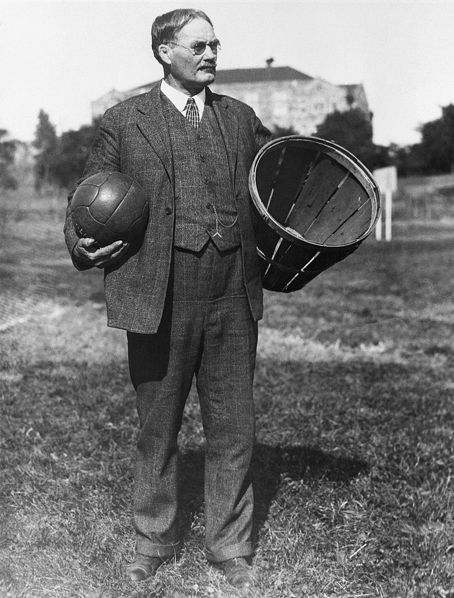

WELCOME TO MY FIRST WEBSITE
HISTORY OF BASKETBALL.
HISTORY OF BASKETBALL
- Basketball began with its invention in 1891 in Springfield, Massachusetts, by Canadian physical education instructor James Naismith as a less injury-prone sport than football. Naismith was a 31-year old graduate student when he created the indoor sport to keep athletes indoors during the winters.[1] The game became established fairly quickly and grew very popular as the 20th century progressed, first in America and then in other parts of the world. After basketball became established in American colleges, the professional game followed. The American National Basketball Association (NBA), established in 1946, grew to a multibillion-dollar enterprise by the end of the century, and basketball became an integral part of American culture.
|

|